Painting

„Mona Lisa” (c. 1503-1506) is Leonardo da Vinci's most famous painting, considered one of the
greatest masterpieces of the Renaissance. It depicts a mysteriously smiling woman seated against a delicate
landscape background. The artwork impresses with its extraordinary realism, subtle chiaroscuro modeling
(sfumato), and calm, harmonious composition. The portrayed woman – most likely Lisa Gherardini, the wife
of a Florentine merchant – has become a symbol of feminine mystery and beauty. Today, the painting is
housed in the Louvre Museum in Paris, where it attracts millions of visitors from around the world.

„The Scream” (1893) is the most famous work of the Norwegian painter Edvard Munch, regarded
as a symbol of existential fear and human anxiety. The painting depicts a figure with a distorted face
standing on a bridge, screaming in despair while the sky burns with dramatic, wavy colors. The expressive
lines and intense hues convey powerful emotions – fear, loneliness, and terror in the face of the world.
The Scream has become one of the most recognizable icons of modern art and a symbol of human unrest.
Michelangelo – „The Creation of Adam”

„The Creation of Adam” (c. 1511) is one of the most famous works of Michelangelo,
forming part of the frescoes on the ceiling of the Sistine Chapel in the Vatican. It depicts the moment when
God reaches out to Adam to breathe life into him – their almost-touching hands symbolize the connection between
divinity and humanity. The composition impresses with its dynamic movement, masterful depiction of the human
body, and profound spiritual meaning. The Creation of Adam is one of the most recognizable symbols of the
Renaissance and a testament to the artist's genius.

„The Starry Night” (1889) is one of Vincent van Gogh's most famous works, painted during his stay
at the psychiatric hospital in Saint-Rémy-de-Provence. The painting depicts a night sky filled with swirling
stars and a glowing moon above a quiet village, seen from the artist's window. The dynamic brushstrokes and
strong color contrasts convey emotional unrest, yet also a sense of awe at the power of nature. The Starry
Night has become a symbol of van Gogh's expressive style and his unique way of perceiving the world.

„The Card Players” (1890-1895) is one of Paul Cézanne's most famous works, depicting two men
absorbed in a calm game of cards. The artist created several versions of this motif, presenting an everyday
scene in a restrained and balanced manner. The simplified forms, harmonious composition, and warm colors
emphasize the concentration and tranquility of the moment. The painting is an excellent example of Cézanne's
style, which combined realism with an innovative approach to shape and color, foreshadowing the development
of modern art and Cubism.

„Girl with a Pearl Earring” (c. 1665) is Johannes Vermeer's most famous painting, often referred
to as the „Mona Lisa of the North.” It depicts a young girl wearing an exotic turban and a large, shimmering
pearl earring. The subtle light, soft shadows, and delicate expression on her face create an atmosphere of
quietness and mystery. Vermeer captured with remarkable precision the moment in which the girl turns her
head, as if she were about to speak. The artwork impresses with its simplicity, elegance, and extraordinary
play of light, making it one of the iconic masterpieces of Dutch painting.

„Wanderer above the Sea of Fog” (1818) is Caspar David Friedrich's most famous painting and a
symbol of Romanticism in art. It depicts a solitary man standing on a rocky peak, gazing out over a vast,
fog-covered landscape below. The figure, shown from behind, symbolizes humanity facing the power and mystery
of nature. The painting blends melancholy, awe, and reflection on the human place in the world, presenting
nature as a realm of spiritual experience and infinity.

„The Last Supper” (1495-1498) is a monumental work by Leonardo da Vinci, painted on the wall of
the refectory of the Santa Maria delle Grazie monastery in Milan. The painting depicts the moment when Jesus
announces to his disciples that one of them will betray him, causing a sudden surge of emotion among the
apostles. Leonardo masterfully portrayed human feelings, gestures, and expressions, and used perspective
in a way that directs the viewer's gaze toward Christ at the center. The work combines spiritual depth with
perfect composition and stands as one of the most important symbols of Renaissance art.
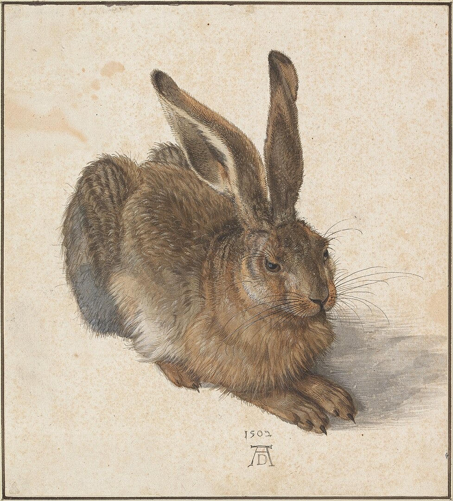
„Young Hare” (1502) is a famous watercolor by Albrecht Dürer and one of the finest examples of his
mastery in observing nature. The artist rendered every detail of the animal with extraordinary precision - the
soft fur, the glimmer in its eye, and the subtle light falling on its body. The work captivates with its
realism and delicate execution, while also expressing Dürer's deep respect for nature. Young Hare has
become an icon of Renaissance art and a symbol of technical perfection in painting and drawing.
Sculpture
Thutmose – „Nefertiti Bust”
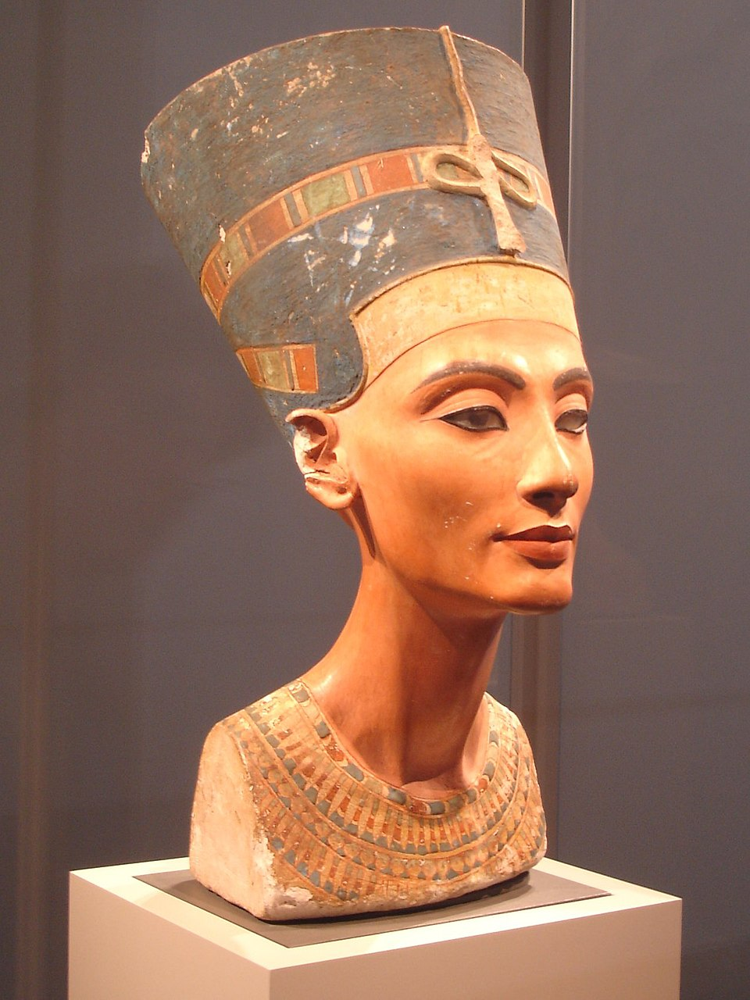
„The Nefertiti Bust” (c. 1345 BCE) is one of the most famous works of ancient Egyptian art,
attributed to the sculptor Thutmose. It depicts Queen Nefertiti, the wife of Pharaoh Akhenaten, known for
her extraordinary beauty and elegance. The sculpture impresses with its perfect proportions, subtle modeling
of the face, and the queen's delicate smile. The characteristic tall crown and the preserved traces of colorful
decoration emphasize the majesty and dignity of the figure. The bust has become a symbol of beauty, harmony,
and the craftsmanship of ancient Egyptian art.
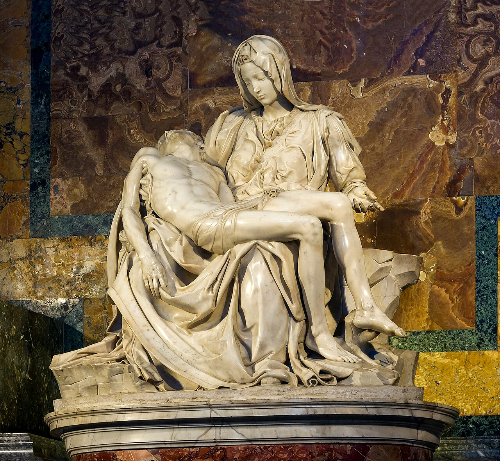
„The Vatican Pietà” is one of the most famous sculptural works in the history of art,
created by Michelangelo between 1498 and 1499. The sculpture, currently located in St. Peter's
Basilica in the Vatican, depicts the Virgin Mary mourning over the dead body of Jesus Christ
shortly after his removal from the cross. It is the only sculpture on which Michelangelo placed
his signature, visible on the sash running across Mary's chest.
Pythokritos – „The Nike of Samothrace”

„The Nike of Samothrace” (c. 190 BCE) is a Hellenistic sculpture depicting the Greek goddess
of victory, Nike. She is shown in dynamic motion, as if she has just landed on the prow of a ship, with
a strong wind billowing her drapery, emphasizing the power and drama of the scene. Despite the absence
of her head and arms, the work captivates with its masterful rendering of movement and expression.
The sculpture is currently housed in the Louvre Museum in Paris and is regarded as one of the greatest
achievements of Hellenistic art.
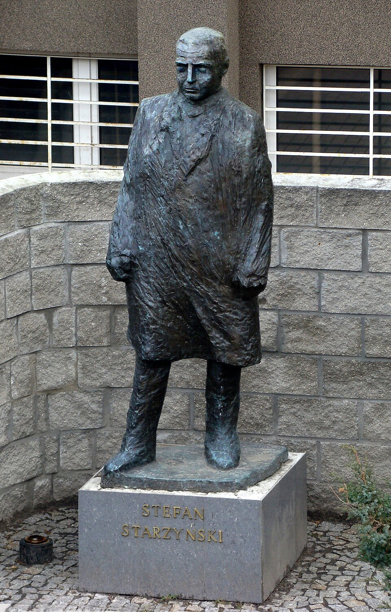
The Monument of Stefan Starzyński, by Ludwika Nitschowa, depicts the Mayor of Warsaw
as a symbol of courage, responsibility, and dedication to the city. The sculpture shows Starzyński
in a focused and dignified posture, emphasizing his role as a leader who stayed with the
residents of Warsaw during the 1939 siege. The monument commemorates his patriotism and
unwavering stance in the face of danger.

„Boxer at Rest” is an ancient Hellenistic sculpture depicting a fatigued athlete after
a fight. The realistically rendered wounds, swollen face, and tense body emphasize effort, pain,
and the fragility of human strength. The sculpture stands out for its remarkable realism and
emotional intensity, portraying the hero not at the moment of triumph, but in a state of
exhaustion and reflection.

„Ugolino and His Sons” is a dramatic sculpture by Jean-Baptiste Carpeaux,
inspired by Dante's Divine Comedy. It depicts Count Ugolino at a moment of extreme suffering,
surrounded by his starving sons. The expressive form, tense muscles, and gestures of the figures
emphasize despair, helplessness, and a tragic choice, making the sculpture one of the most powerful
examples of emotional realism in the 19th century.

The Statue of Liberty is a monumental sculpture in New York, designed by Frédéric
Auguste Bartholdi and gifted by France in 1886. It depicts a woman holding a torch and a tablet
inscribed with the date of the U.S. Declaration of Independence, symbolizing freedom, democracy,
and hope. Due to its immense size and striking symbolism, it has become one of the most
recognizable symbols in the world.

„Psyche and Cupid” is a classical sculpture by Antonio Canova, depicting a moment of
loving rapture between Psyche and Cupid. The delicate, harmonious bodies and subtle gestures
convey affection, trust, and the beauty of idealized forms. The sculpture is one of the most
important examples of Neoclassicism, combining anatomical perfection with poetic emotional
expression.
Rapa Nui – „Moai”
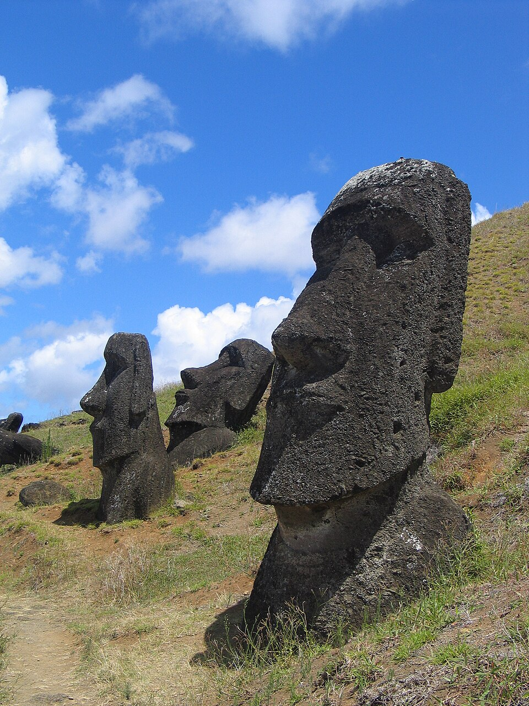
The moai are over 900 statues carved by the Rapa Nui people between 1250 and 1500.
Although we most commonly associate them with their massive heads, most of them also have torsos
buried underground. The average height of a statue is about 4 meters, and their transport and erection
remain subjects of study and engineering admiration to this day.
Photography
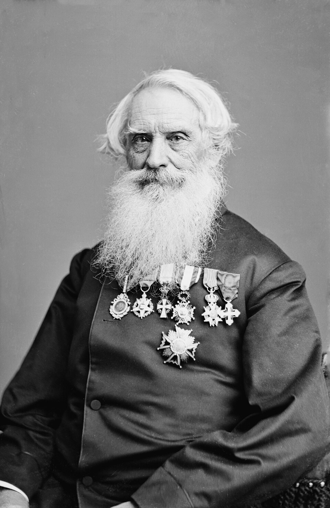
This photograph by Mathew B. Brady depicts the American inventor and artist,
the creator of the telegraph and the Morse code. The portrait is rendered in the formal
studio style characteristic of 19th-century photography, emphasizing the subject's seriousness
and intellectual authority. The image constitutes a valuable document of the era of early
modernity and the history of communication.
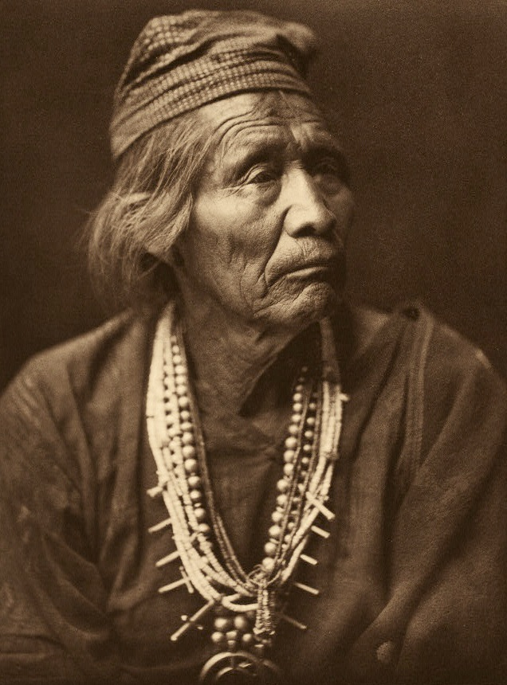
This is a historical photograph taken around 1904 by Edward S. Curtis, depicting
Nesjaja Hatali, a renowned medicine man and a member of the Navajo (Diné) people. The
image is a portrait of an elderly man wearing traditional clothing and jewelry, presenting
an important figure in the culture and medicine of Native Americans in the early 20th century.
The photograph comes from The North American Indian series, an extensive project documenting
the lives and customs of the Indigenous peoples of the Americas.
Felice Beato – „Samurai of the Satsuma Clan”

„Samurai of the Satsuma Clan” is a historical photograph depicting members of the
Satsuma (Shimazu) samurai clan, taken around the 1860s (circa 1867) by photographer Felice Beato.
It shows a group of samurai during the Boshin War–a conflict in which Satsuma was a key ally of the
forces seeking to overthrow the shogunate and restore imperial rule in Japan. The photograph
captures their traditional attire, weapons, and stances, and stands as one of the earliest
surviving images of Japanese warriors of this class during a period of profound social
and political transformation in Japan.
Jacob Riis – „A Five-Cent Apartment”
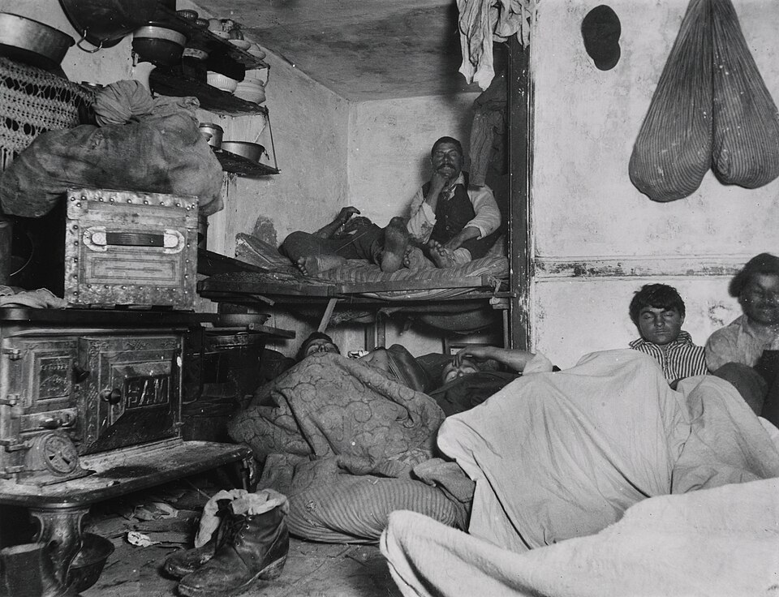
This is a black-and-white photograph taken by Jacob Riis in 1889 in New York City.
It depicts a very cramped and overcrowded room in a tenement building, where poor residents–often
immigrants–paid five cents for a place to sleep for the night. The image reveals the realities
of life among the poorest social classes in the 19th-century city: appalling sanitary conditions,
a lack of space and privacy, and the harsh everyday existence of people who could not afford
better housing. Riis published such photographs to raise public awareness of the severity
of the situation and to help bring about reforms in housing conditions in urban slums.
Lewis Hine – „Newsboys smoking”
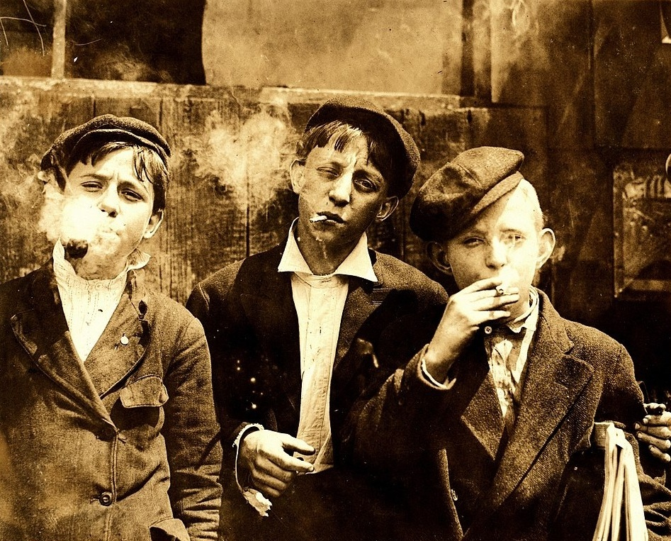
This is a historical photograph taken by Lewis Hine, depicting newsboy children
on the streets of St. Louis, Missouri, in 1910, holding and smoking cigarettes during a break
from work. The photograph illustrates the realities of life for young street workers in the
early decades of the 20th century–children earning money by selling newspapers often grew up
faster than their peers, and such images highlight the harsh working conditions and everyday
habits shaped by the street culture of the era. Hine used his photographs as a tool to document
child labor and to support reforms against child labor in the United States.
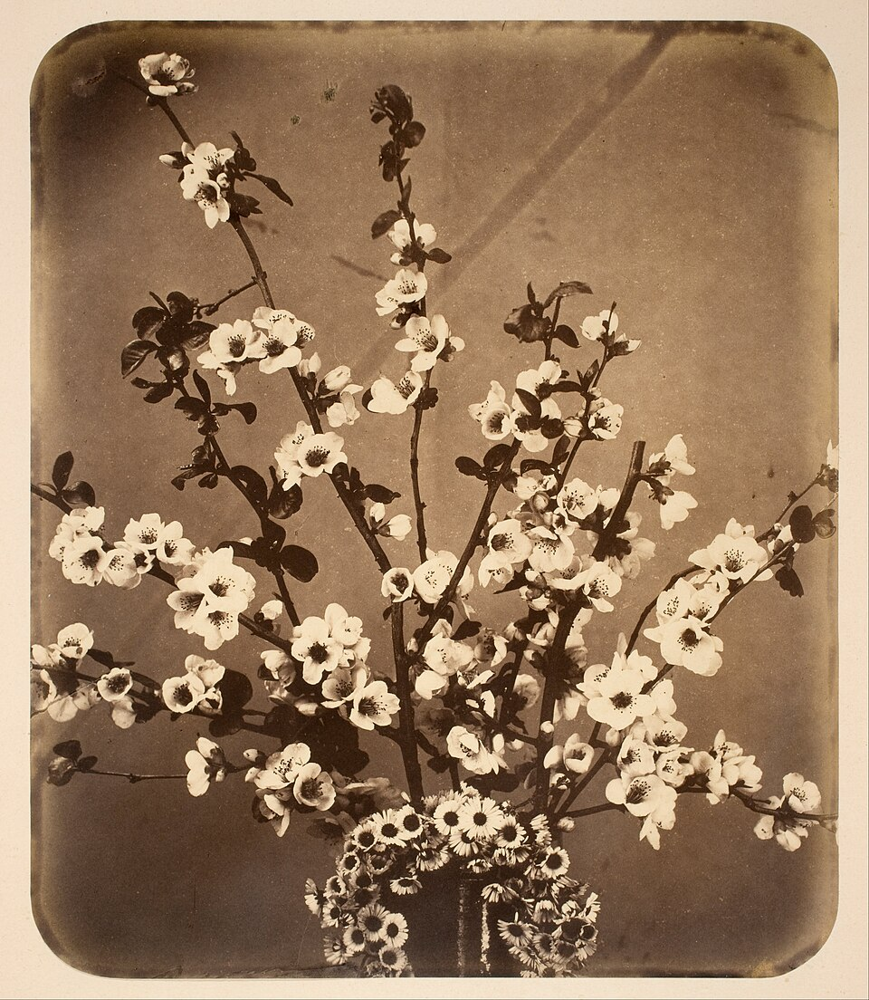
„Floral Still Life” by Adolphe Braun is a classic example of a still-life composition
in which the artist presents inanimate objects arranged in a harmonious composition. The photograph
dates from the 19th century and is characterized by careful attention to detail, light, and the
texture of the objects, transforming ordinary elements of everyday life into works of art.
Braun's works were among the first to treat photography as a medium of artistic expression rather
than merely a documentary tool, and they had a significant influence on the development of
photographic still life in Europe.
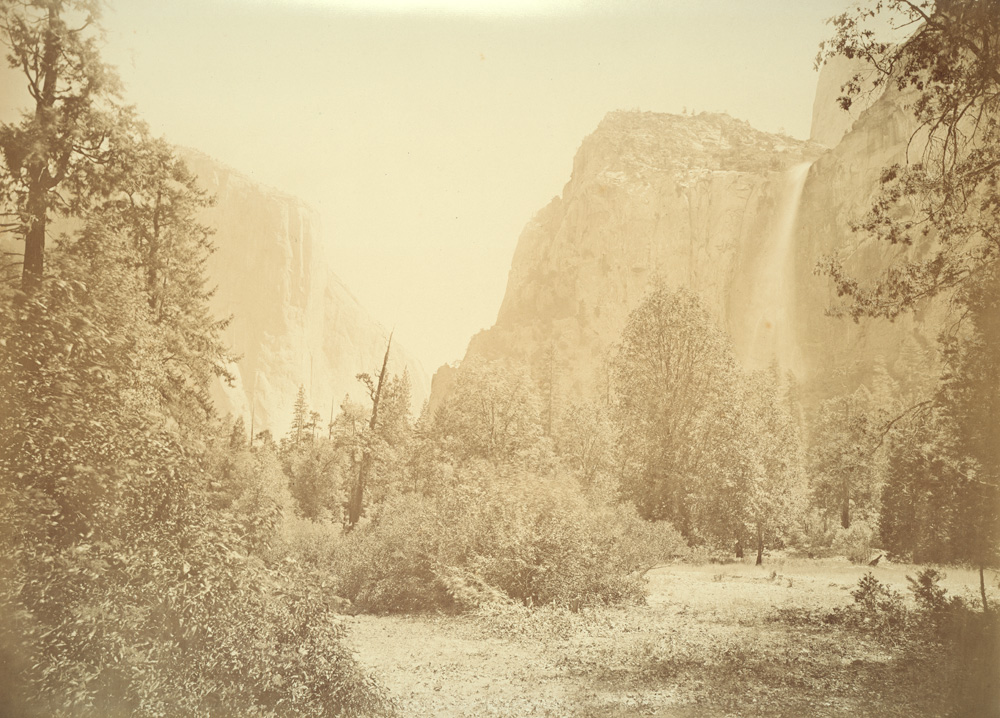
“Bridal Veil Falls”, a photograph by Carleton Watkins, depicts a picturesque
waterfall in California, whose cascading water resembles a delicate bridal veil. Taken in
the 19th century, the photograph captures both the monumentality of nature and the precise
composition characteristic of Watkins's work, which documented the landscapes of the western
United States during the period of exploration of Yosemite and its surrounding areas.
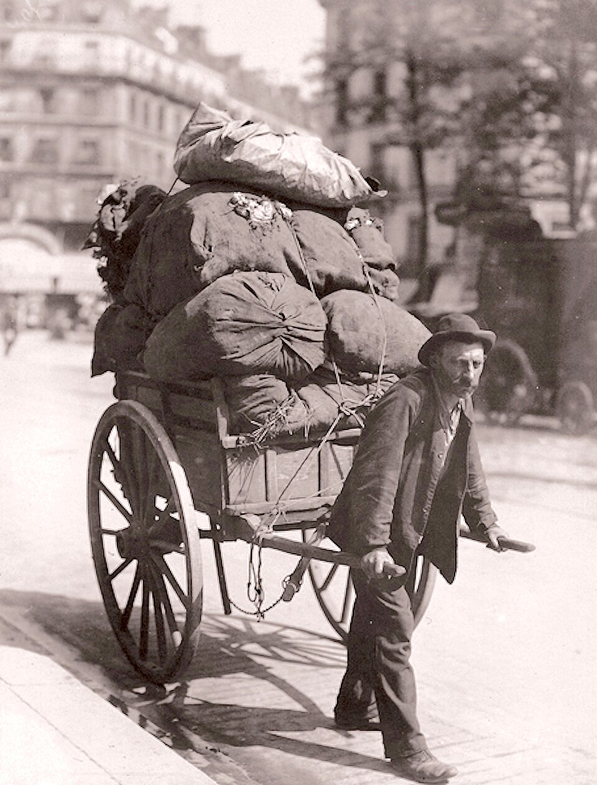
„Ragpicker” by Eugène Atget depicts a scrap or rag collector in Paris at the
beginning of the 20th century. The image portrays the everyday life of urban workers from
the lowest social class–their labor and living conditions–captured in Atget's characteristically
austere, documentary style. The photograph is part of Atget's broader project documenting old
Paris, disappearing professions, and the city's architecture, and it stands as an important
socio-historical record as well as an example of early documentary photography.
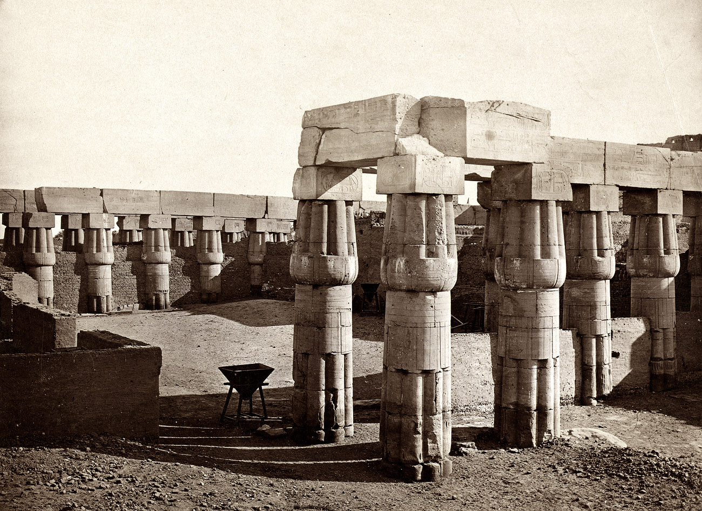
This photograph by Francis Frith is a historical image depicting the city of
Luxor in Egypt, its monuments, and ancient ruins, taken in the mid-19th century. Frith,
a renowned British travel photographer, captured the monumental columns, temples, and the
landscape of the Nile, combining archaeological documentation with artistic aesthetics.
The photograph is an example of early travel and Orientalist photography, intended to present
Europe with exotic locations and the ancient culture of Egypt.